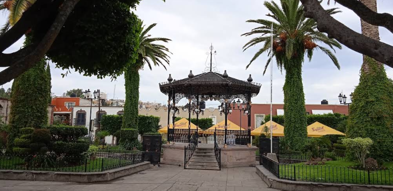
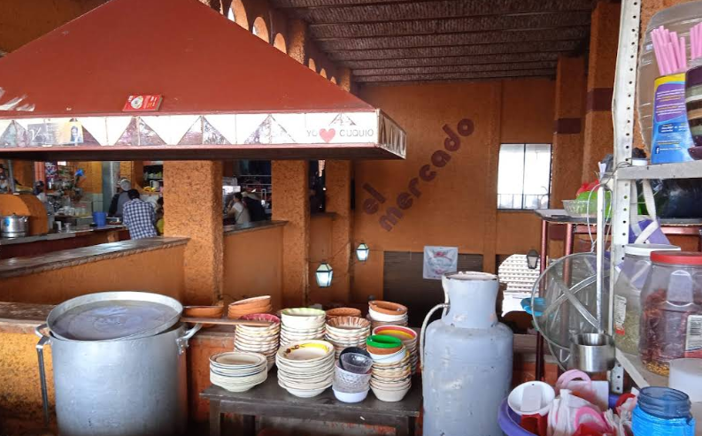
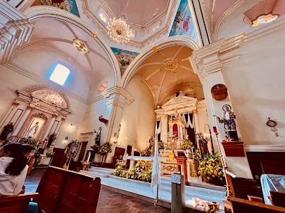
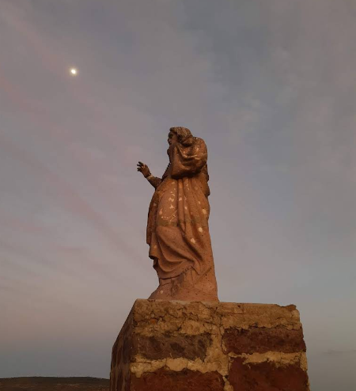
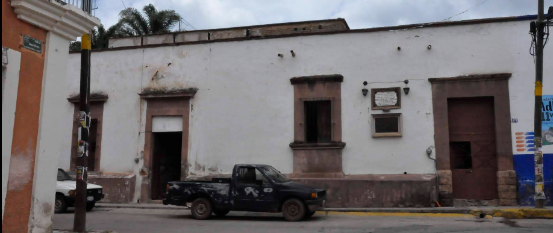
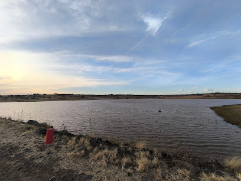
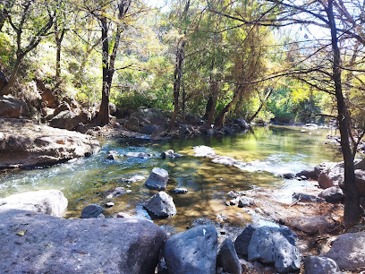

Plaza Principal

45480 Cuquío, Jal.
El corazón del pueblo. Un espacio lleno de historia, rodeado de árboles, bancos y arquitectura colonial perfecta para pasear y convivir.

45480 Cuquío, Jal.
El corazón del pueblo. Un espacio lleno de historia, rodeado de árboles, bancos y arquitectura colonial perfecta para pasear y convivir.

C. Francisco I. Madero 30, 45480 Cuquío, Jal.
Sabores, colores y tradición. Aquí encontrarás productos locales, antojitos típicos y el auténtico ambiente de la vida diaria cuquiense.

Centro Histórico, 45480 Cuquío, Jal.
+52 37 3796 5229
Majestuoso templo de gran valor histórico y espiritual. Su arquitectura y belleza interior la convierten en un punto emblemático de Cuquío.

C. Álvaro Obregón, 45480 Cuquío, Jal.
Un rincón de fe y tranquilidad. Este templo, de fachada sobria y cálida, es uno de los espacios religiosos más visitados del municipio.

Cerro de Cristo Rey, Cuquío, Jal.
Ubicado en lo alto del cerro, este monumento ofrece una vista panorámica espectacular de Cuquío. Ideal para los amantes del senderismo y la fotografía.

C. José Ayala 212, 45480 Cuquío, Jal.
Un pedazo de historia viva. Este inmueble fue testigo del paso del Padre de la Patria durante su lucha independentista.

45496 Cuquío, Jal.
Un refugio natural perfecto para relajarse, disfrutar de un picnic, pescar o simplemente admirar la serenidad del paisaje.

X4Q5+R9, 45486 Los Capulines, Jal.
Un paraíso escondido con aguas naturalmente cálidas. Ideal para un baño relajante rodeado de naturaleza.
En Cuquío puedes encontrar una amplia variedad de locales que tambien puedes visitar y que ofrecen deliciosos platillos típicos, como tacos, pozole, birria, burritos, tamales, entre muchos otros. A continuación, te mostramos uno de los lugares.